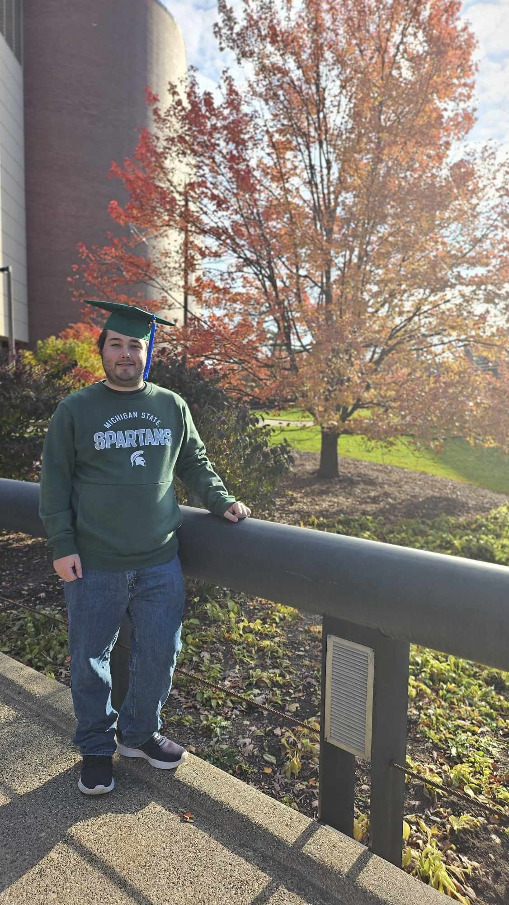

About Me
Recent graduate of Michigan State university, with a B.A. in Information Science. Long-term goal of learning the new technologies of our ever-changing industry. Strong work ethic and dedication to company values and practices. IT Support experience at Warren Consolidated Schools.